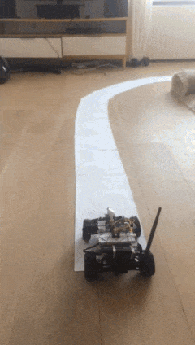
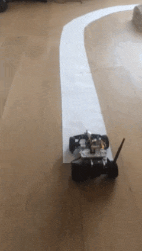
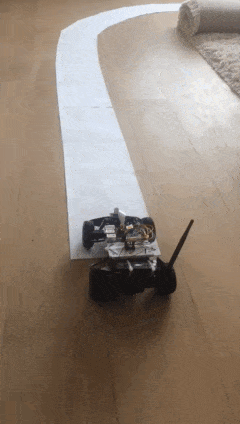

Expert-augmented actor-critic
ror Vizdoom and Montezuma's Revenge
We propose an actor-critic algorithm reinforcement learning algorithm, which
can additionally utilise expert trajectories. The algorithm is evaluted on two
environments with sparse rewards: Montezuma’s Revenge and Vizdoom. On
Montezuma’s Revenge, our agent achieves qualitatively strong results,
consistently scoring results above 8000 points and in some experiments solving
the first world. In the case of Vizdoom, the agent learns to navigate a
complicated maze in a scenario which is too difficult to be solved by
model-free algorithms not augmented by expert data.
Introduction
Deep reinforcement learning has shown impressive results in simulated
environments. However, as the cost of random exploration increases rapidly with
the distance of rewards, current approaches often fail when rewards are sparse.
This inhibits using reinforcement learning methods in real-world applications.
Take as an example robotics, where in many cases rewards are calculated once a
task is completed and thus are binary and sparse. The situation is aggravated
if no simulation is available, making sample efficiency a key factor of
success.
One way to improve the efficiency of exploration is to utilize expert data. The
standard behavioral cloning often suffers from compounding errors when drifting
away from the supervisor’s demonstra- tions. While this can be mitigated by
iterative methods like DAgger, the cost is cumbersome data collection process.
In recent [1] authors analyze performance of behavioral cloning on Atari 2600
games. In the challenging example of Montezuma’s Revenge their method reaches
on average only 575 points despite being trained on demonstration trajectories
that score 30 000 points.
Our approach is based on the Actor-Critic using Kronecker-Factored Trust Region
(ACKTR) algo- rithm [3]. This algorithm uses natural gradient techniques to
accelerate the gradient ascent optimization by changing parameters in the
direction that minimizes the loss with respect to small step in the distri-
bution of network output (in our case policy), as opposed to small step in the
parameter space metric. Natural gradient approaches proved to be successful in
increasing speed and stability of learning. We modify ACKTR so that it utilizes
expert data. We believe that expert data guides agent’s exploration. In our
evalutation, on Montezuma’s Revenge and Vizdoom environments this substantially
accelerates the learning process.
How to build a small self driving car?
My recent side project is a building small self driving car with
my friend Filip. See the code on
my github.
There is fair amount of folks doing similar projects, there are even people who
race these things. If it looks interesting, you could do it too - it is easier than
ever and I'm sure you'd learn a lot.



The car works in the following way:
-
On board of the car there is forward facing RasPi camera.
-
The image stream is sent to GPU computer,
which streams steering commands back:
"go forward", "stop", "turn left", etc.
-
Steering commands are issued in one of two ways:
-
Human input, where you steer the car in racing video game fashion.
-
Self-driving algorithm, which tries to guess what would a human do
based on current video frame.
To enable all of this, pieces of various software infrastructure and hardware
are necessary.
but the materials and their shapes are chosen in a smart
way that makes it all work together well. So cool!
That wraps up the description of the "brutalist"
steering mechanism. Back to self driving!
* Hardware coming together *
When we had already the "drive by keyboard attached to RasPi by cable"
capability, we wanted to test remote control of the car.
In order to do that, we needed to power the RPi.
Not sure about how much power it needs, we have bought a pretty big power
bank for mobile phone with electric charge of 10.000 mAh, weighting around 400 g.
I am huge fan of American automotive show
Roadkill,
in which two guys, mostly by themselves, fix extremely clapped out classic
American cars, usually on the road / in WalMart parking lot / in the junkyard.
Typically they take some rotten engine-less chassis and put in a
cheapest-they-can-find V8 into them. Needless to say, they are masters of
using zip-ties.
Inspired by Freiburger and Finnegan experiences, I have relied on ziptie engineering
in order to combine the collection of parts into one coherrent vehicle
that will move together. The end product looked like this:
You may say that it looks pretty, but that's about all it did. Notice how big
the battery is in relation to the car. Turns out, it was way too big.
Unfortunately, the car was significantly too heavy to move on its own.
So the heaviest part of the car was the battery pack powering the RasPi. After
getting some initial experiences it became clear that 10000 mAh is a lot of
more than sufficient power to run RasPi on, even with WiFi interface for
reasonable amount of time. Thus it was easiest to save weight by buying a way
lighter battery with less capactiy.
We were really lucky about the Pokemon Go craze that has rolled through the Netherlands
in early 2017, as it meant abundant supply of cheap mobile battery packs.
We quickly sourced a new one, and with the new battery, the car looked like this:
Unfortunately, the car was still way too weak to drive well with RasPi
strapped to its back. We needed a bigger car, but before I describe it,
I will show how we have put together image capture and streaming system.
{kind=link}
{kind=link}
{kind=link}
{kind=link}
{kind=link}
{kind=link}
{kind=link}